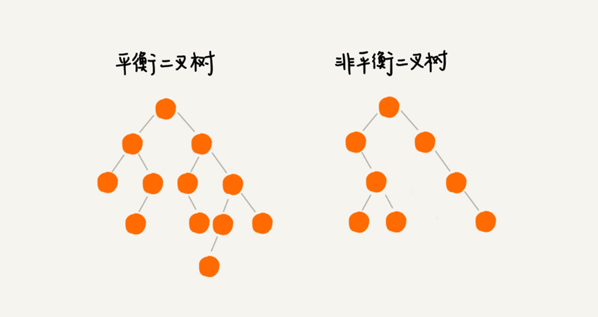
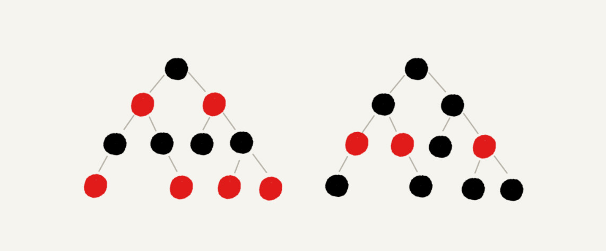
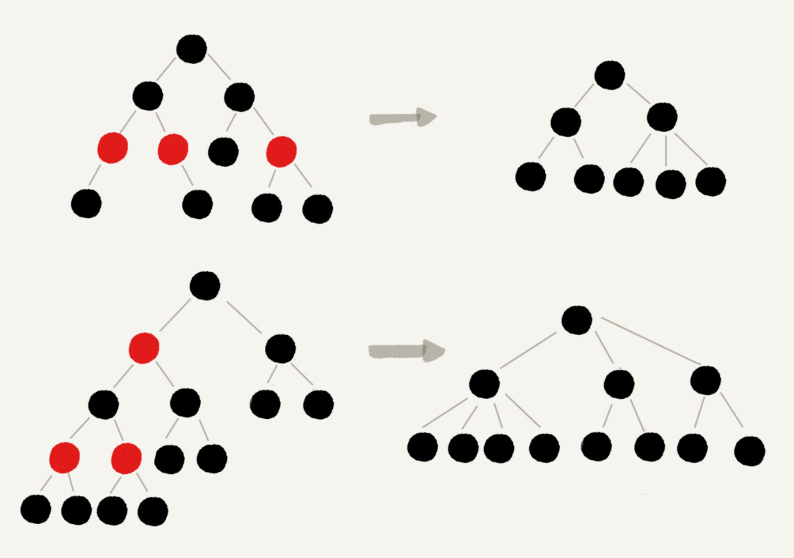

什么是“平衡二叉查找树”？
平衡二叉树的严格定义是这样的：二叉树中任意一个节点的左右子树的高度相差不能大于 1。从这个定义来看，上一篇的完全二叉树、满二叉树其实都是平衡二叉树，但是非完全二叉树也有可能是平衡二叉树。

发明平衡二叉查找树这类数据结构的初衷是，解决普通二叉查找树在频繁的插入、删除等动态更新的情况下，出现时间复杂度退化的问题。
所以，平衡二叉查找树中“平衡”的意思，其实就是让整棵树左右看起来比较“对称”、比较“平衡”，不要出现左子树很高、右子树很矮的情况。这样就能让整棵树的高度相对来说低一些，相应的插入、删除、查找等操作的效率高一些。
如何定义一棵“红黑树”？
一棵红黑树需要满足这样几个要求：
- 根节点是黑色的；
- 每个叶子节点都是黑色的空节点（
NIL），也就是说，叶子节点不存储数据； - 任何相邻的节点都不能同时为红色，也就是说，红色节点是被黑色节点隔开的；
- 每个节点，从该节点到达其可达叶子节点的所有路径，都包含相同数目的黑色节点；
为了更好地理解上面的定义，画了两个红黑树的图例，你可以对照着看下。

红黑树是“近似平衡”的
平衡二叉查找树的初衷，是为了解决二叉查找树因为动态更新导致的性能退化问题。所以，“平衡”的意思可以等价为性能不退化。“近似平衡”就等价为性能不会退化的太严重。
首先，我们来看，如果将红色节点从红黑树中去掉，那单纯包含黑色节点的红黑树的高度是多少呢？
红色节点删除之后，有些节点就没有父节点了，它们会直接拿这些节点的祖父节点（父节点的父节点）作为父节点。所以，之前的二叉树就变成了四叉树。

红黑树的定义里有这么一条：从任意节点到可达的叶子节点的每个路径包含相同数目的黑色节点。我们从四叉树中取出某些节点，放到叶节点位置，四叉树就变成了完全二叉树。所以，仅包含黑色节点的四叉树的高度，比包含相同节点个数的完全二叉树的高度还要小。
上篇我们说，完全二叉树的高度近似 log2n，这里的四叉“黑树”的高度要低于完全二叉树，所以去掉红色节点的“黑树”的高度也不会超过 log2n。
现在知道了只包含黑色节点的“黑树”的高度，那我们现在把红色节点加回去，高度会变成多少呢？
从上面的红黑树的例子和定义看，在红黑树中，红色节点不能相邻，也就是说，有一个红色节点就要至少有一个黑色节点，将它跟其他红色节点隔开。红黑树中包含最多黑色节点的路径不会超过 log2n，所以加入红色节点之后，最长路径不会超过 2log2n，也就是说，红黑树的高度近似 2log2n。
所以，红黑树的高度只比高度平衡的 AVL 树的高度（log2n）仅仅大了一倍，在性能上，下降得并不多。这样推导出来的结果不够精确，实际上红黑树的性能更好。
总结
学习数据结构和算法，要学习它的由来、特性、适用的场景以及它能解决的问题。对于红黑树，也不例外。如果能搞懂这几个问题，其实就已经足够了。
红黑树是一种平衡二叉查找树。它是为了解决普通二叉查找树在数据更新的过程中，复杂度退化的问题而产生的。红黑树的高度近似 log2n，所以它是近似平衡，插入、删除、查找操作的时间复杂度都是 $O(logn)$。
因为红黑树是一种性能非常稳定的二叉查找树，所以，在工程中，但凡是用到动态插入、删除、查找数据的场景，都可以用到它。不过，它实现起来比较复杂，如果自己写代码实现，难度会有些高，这个时候，其实更倾向用跳表来替代它。
思考
为什么在工程中大家都喜欢用红黑树这种平衡二叉查找树？
前面提到
Treap、Splay Tree，绝大部分情况下，它们操作的效率都很高，但是也无法避免极端情况下时间复杂度的退化。尽管这种情况出现的概率不大，但是对于单次操作时间非常敏感的场景来说，它们并不适用。AVL树是一种高度平衡的二叉树，所以查找的效率非常高，但是，有利就有弊，AVL树为了维持这种高度的平衡，就要付出更多的代价。每次插入、删除都要做调整，就比较复杂、耗时。所以，对于有频繁的插入、删除操作的数据集合，使用AVL树的代价就有点高了。红黑树只是做到了近似平衡，并不是严格的平衡，所以在维护平衡的成本上，要比
AVL树要低。所以，红黑树的插入、删除、查找各种操作性能都比较稳定。对于工程应用来说，要面对各种异常情况，为了支撑这种工业级的应用，我们更倾向于这种性能稳定的平衡二叉查找树。
动态数据结构支持动态地数据插入、删除、查找操作，除了红黑树，还学习过哪些呢？能对比一下各自的优势、劣势，以及应用场景吗？
动态数据结构是支持动态的更新操作，里面存储的数据是时刻在变化的，通俗一点讲，它不仅仅支持查询，还支持删除、插入数据。而且，这些操作都非常高效。如果不高效，也就算不上是有效的动态数据结构了。所以，这里的红黑树算一个，支持动态的插入、删除、查找，而且效率都很高。链表、队列、栈实际上算不上，因为操作非常有限，查询效率不高。
散列表：插入删除查找都是$O(1)$, 是最常用的，但其缺点是不能顺序遍历以及扩容缩容的性能损耗。适用于那些不需要顺序遍历，数据更新不那么频繁的。
跳表：插入删除查找都是$O(logn)$, 并且能顺序遍历。缺点是空间复杂度$O(n)$。适用于不那么在意内存空间的，其顺序遍历和区间查找非常方便。


评论加载中